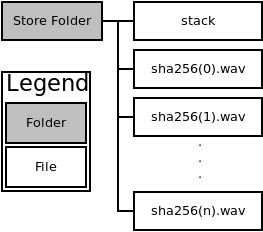

Table of Contents
1 About
This application creates text to speech files from the system clipboard, makes a FIFO queue of the sound files and plays them in the order they were enqueued.
It uses xsel to get the systems clipboard and espeak to produce the text to speech audio files.
1.1 Requirements
- espeak
- xsel
- python3
- Linux
2 Implementation
The program has a hard coded path sound_files in /home/user/ where all
text to speech files are stored, and where the queue is persisted between
calls. All files are named using the sha3 hash of the text that will be
turned to speech.

The program has four command line flags:
-a: Add to queue
Create a text2speech file and add it to the queue
-p: Play
Start playing the top file of the queue and continue playing all subsequent files, files are deleted when played fully.
-l: List files currently on the queue by name.
These are currently only done by the hash of the text to be read.
-s: Select the text to speech speed in word per minute.
Select a the speed at which the audio file is encoded.
-p: Select the text to speech pitch.
Select the 'pitch' of the audio file. A fake one parameter value that controls multiple parameters of the output sound.
-j: Merge all into single file
Not currently implemented Take all the files on the queue and merge them into a single wav file.
3 Code
The over all structure of the program, with sections tangled from the following sections.
<<header>> #import statements and cli interface <<queue-helpers>> #persist the queue on disk and read it <<enqueue>> #Put the clipboard on the queue as an audio file <<dequeue>> #Remove an audio file and play it <<concat>> #Future options - not implemented <<list>> #List the files currently in the queue <<dispatcher>> #cli interface mapping options to functions
3.1 House keeping
Setup shebang, script working directory, flags and queue persistence functions. The shebang used is the file location of the venv python. The flags are implemented from argparse.
Name:Header Tangle to:lit.py
import os from hashlib import shake_256 import argparse from collections import deque import pickle from pathlib import Path home = str(Path.home()) os.chdir("{}/sound_files".format(home)) parser = argparse.ArgumentParser() parser.add_argument("-a", "--add", help="add a file", action="store_true") parser.add_argument("-p", "--play", help="play a file", action="store_true") parser.add_argument("-j", "--join", help="join all files", action="store_true") parser.add_argument("-l", "--list_files", help="list all files on queue", action="store_true") parser.add_argument("-s", "--speed", nargs='?', default='750',help="speed of recitation") parser.add_argument("-i", "--pitch", nargs= '?', default='100', help="pitch of recitation") args = parser.parse_args()
3.2 Queue persistence
Queue from collections is picked and unpicked from the given file.
The queue class is used from the collections library,
pickle is used to store a binary representation of the queue in the stack file.
If pickle can't read the file, we assume there is no current stack and create a new one.
def read_queue(): '''Read the queue stored in stack, or create new one if an error occurs. Return the read in queue.''' with open('stack', 'rb') as f: try: deq = pickle.load(f) except: deq = deque() #Add a delete all wav files here. return deq def write_queue(q): '''Write the queue q into 'stack'.''' with open('stack', 'wb') as f: pickle.dump(q, f)
3.3 Enqueue files
We create a sha3 256 object and put all the copied text into it. We then digest the text to 16 letters and use that as the name for the wav file generated from the text. We run two independent checks: if the text hash is already on the queue and if the wav file generated from the text is in the file system. If either of those is not true we rectify the situation.
Enqueue Lit.py
def add_to_stack(): '''Enqueues items, write out to the queue persistance file, create a text to speech file with sha as name. ''' m = shake_256() name = (os.popen("xsel").read()) m.update(str.encode(name)) name = m.hexdigest(16) t2t_queue = read_queue() on_filesystem = os.path.isfile("{}.wav".format(name)) on_queue = (name in t2t_queue) if not on_queue: t2t_queue.append(name) write_queue(t2t_queue) print(t2t_queue) if not on_filesystem: os.system("xsel | tr '\n' ' ' | espeak -p {pitch} -s {speed} -v male7 -w {name}.wav --stdin" .format(name=name, speed=args.speed, pitch=args.pitch)) #Delete all files not on the queue.
3.4 Dequeue files
We read in the first entered file on the queue, play it and delete it. Do this recusively until to files remain on the queue. There is a delete option that is used to remove the wav file if it has been played. If a file is not found on disk, it is popped off the queue and the program moves to the next file to play.
Dequeue Lit.py
def pop_from_stack(delete=True): '''Dequeue a file from the left end of the queue.''' t2t_queue = read_queue() try: name = t2t_queue.popleft() except IndexError: print('No files quequed up') os.system('rm *wav') return write_queue(t2t_queue) check = os.path.isfile("{}.wav".format(name)) if not check: #see if you can use trys with os.system print('No file on disk') else: os.system('mplayer {}.wav'.format(name)) if delete: os.system('rm {}.wav'.format(name)) pop_from_stack()
3.5 Concat files
This should read all the files on the queue and put them as one large file. Not currently used.
Concat Lit.py
def concat_files(): '''Concat all the files in the queue''' #Badly tested. t2t_queue = read_queue() new_files = [] for i in t2t_queue: check = os.path.isfile("{}.wav".format(i)) if check: new_files.append(i) joined_command = ['{}.wav'.format(x) for x in new_files] joined_command = ' '.join(joined_command) os.system('sox {} big.wav'.format(joined_command)) os.system('mplayer big.wav') os.system('rm *wav')
3.6 List files [0/1]
[ ]Expand to list running time of files on queue.
A simple function that just lists all the files on the queue.
List Lit.py
def list_files(): k = read_queue() print("The size of the queue is {}".format(len(k))) for i in k: print(i)
3.7 Main dispatcher
Checks which flags have been set and executes the functions attached to them.
Displatcher Lit.py
if __name__ == "__main__": if args.add: add_to_stack() if args.play: pop_from_stack() if args.join: concat_files() if args.list_files: list_files()
4 User guide
- Listen to clipboard: q -ap
- Add clipboard to queue q -a
- Listen to queue q -p
- Read back clipboard at X word per minute: q -a -s X
- Read back clipboard with pitch X: q -a -p X
5 Plan
5.1 TODO Add testing
Create another file testing.py that runs tests on the files. Testing should have no impact on how you write the code.
5.2 TODO Spin off own threads for audio file creation.
5.3 TODO Make file to extract the code from org file.
5.4 TODO Create a deamon that plays any enqueued audio file.
5.5 TODO Redo code with better data structures.
5.6 DONE Extensoin [1/1]
[X]Expand this to have an endless loop that constantly plays back files if any are present.